Virtual Gonioreflectometer
A Wan 2.1 14B video model is finetuned to generate material videos under controlled camera and light trajectories, making its material prior observable through a structured measurement pattern.
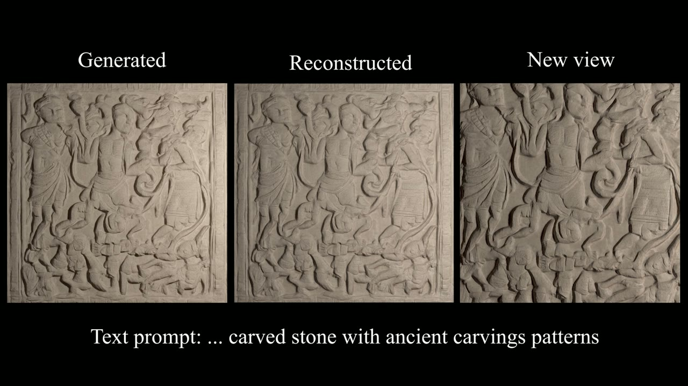
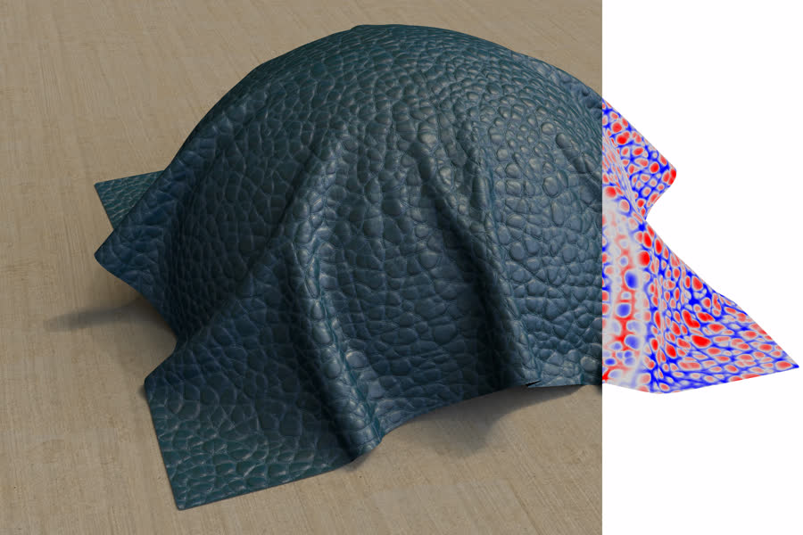
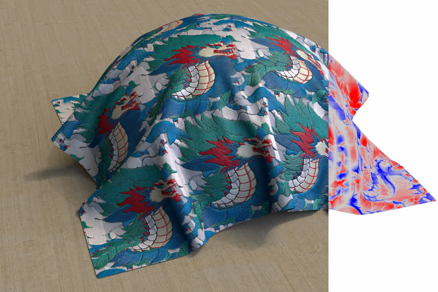
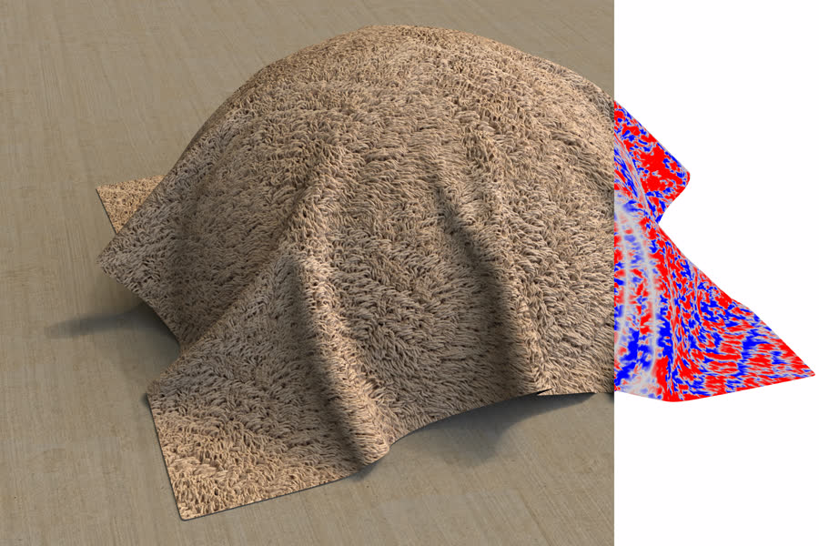
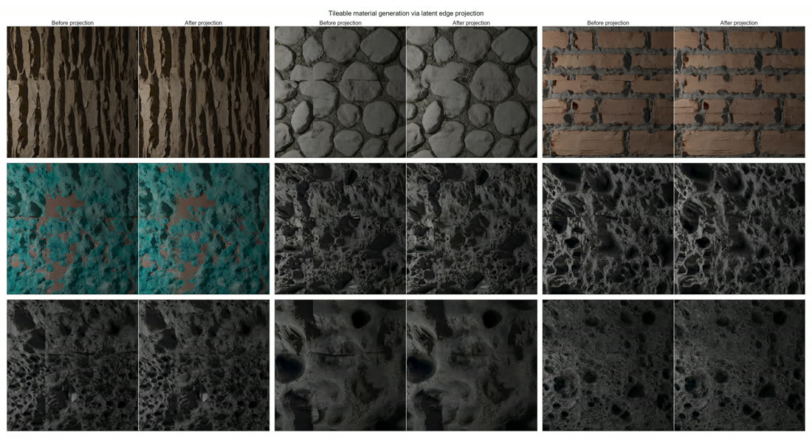
Creating photorealistic materials for 3D rendering requires exceptional artistic skill. Generative models for materials could help, but are currently limited by the lack of high-quality training data. While recent video generative models effortlessly produce realistic material appearances, this knowledge remains entangled with geometry and lighting.
We present VideoNeuMat, a two-stage pipeline that extracts reusable neural material assets from video diffusion models. First, we finetune a large video model (Wan 2.1 14B) to generate material sample videos under controlled camera and lighting trajectories, effectively creating a virtual gonioreflectometer that preserves the model's material realism while learning a structured measurement pattern.
Second, we reconstruct compact neural materials from these videos through a Large Reconstruction Model (LRM) finetuned from a smaller Wan 1.3B video backbone. From 17 generated video frames, our LRM performs single-pass inference to predict neural material parameters that generalize to novel viewing and lighting conditions.
VideoNeuMat first adapts a video diffusion model into a structured material-video generator, then distills the generated measurements into a compact neural material representation that supports rendering under new views and lights.

A Wan 2.1 14B video model is finetuned to generate material videos under controlled camera and light trajectories, making its material prior observable through a structured measurement pattern.

A feed-forward LRM reconstructs neural material parameters from 17 generated frames, producing assets that can be relit and applied to novel geometry.
The reconstructed neural materials preserve rich appearance detail while generalizing from training views to novel views and lighting.
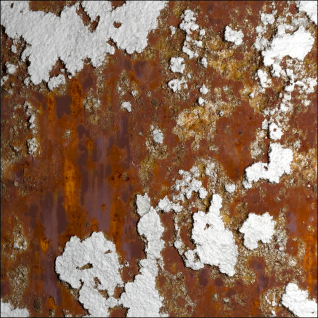
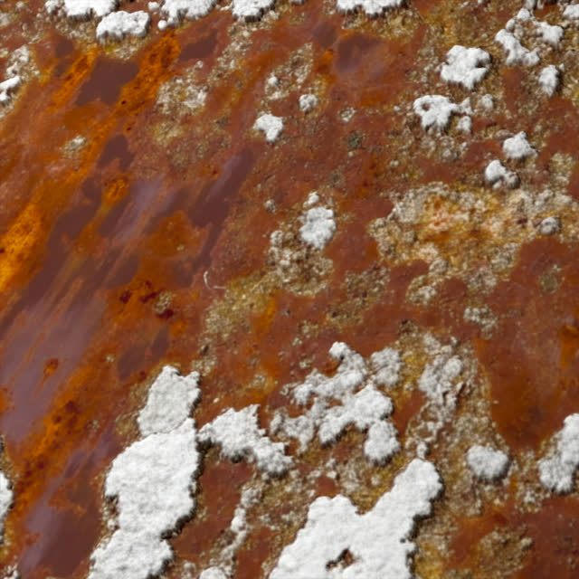
Corroded steel, salt deposits, rust train / novel view
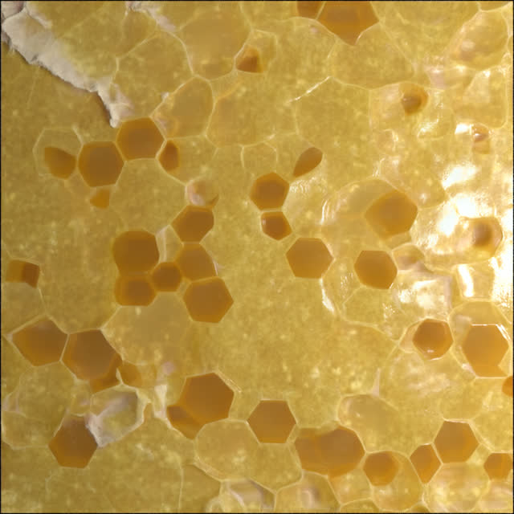
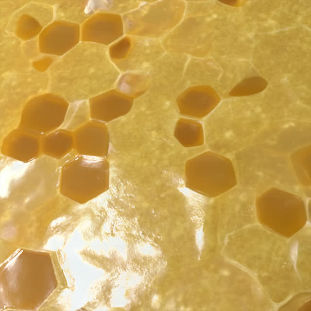
Beeswax with hexagonal cells train / novel view
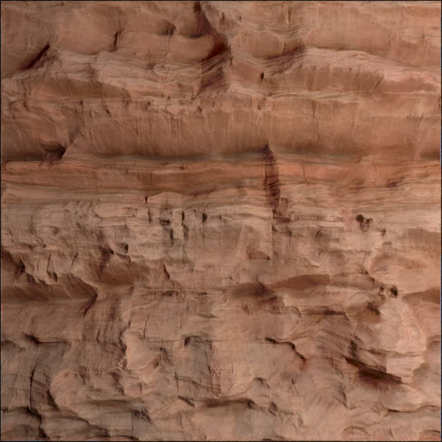
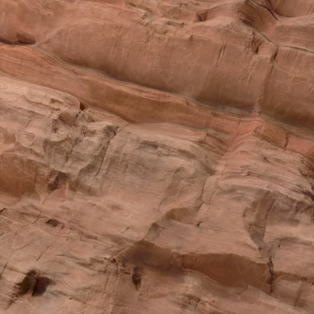
Red rock cliff train / novel view
Contemporary machine embroidery train / novel view
VideoNeuMat also supports optional tileable material generation and projection.
The PDFs linked here are web-optimized for GitHub Pages. For the final public release, host full-resolution PDFs using GitHub Releases, institutional storage, or another stable URL and update the links above.
@article{xue2026videoneumat,
author = {Xue, Bowen and Hadadan, Saeed and Zeng, Zheng and Rousselle, Fabrice and Montazeri, Zahra and Hasan, Milos},
title = {VideoNeuMat: Neural Material Extraction from Generative Video Models},
journal = {ACM Transactions on Graphics (SIGGRAPH)},
year = {2026},
}